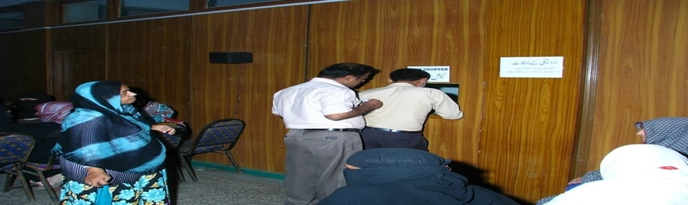

Institutional Aid
Hamdard Foundation Pakistan also gives regular finanal support to various organizations who are doing public welfare services, providing free treatment and medicines to poor and needy patients.
Donations are regularly given to many Schools, Madaris and non-governmental organizations working to provide help to people affected by calamities.
Hamdard Foundation Pakistan also contributes for expenses of different conferences and events of public interest.
During the year 2016-17 Rs. 5,542,524/= Hamdard Foundation Pakistan has been provided financial assistance to the following National institutions.
- Sindh Institute of Urology and Transplantation (S.I.U.T)
- Aman Foundation
- Chippa Foundation
- AAPS
- The Citizen Foundation
- CPLC (Karachi)
- Aziz Jehan Begum Trust for The Blind
- Healthcare and Social Welfare Association (HASWA)
- Patient Welfare Society Allied Hospital (Faisalabad)
- Poor Patient Aid Society Civil Hospital (Karachi)
- Dowties 78
- Jama-e-Shifa Hospital
- Fatmid Foundation
- Nigehban Civil Karachi
- Sahara for life Trust
- Association of the Physically Handicapped Adults
- Gul Baho
- Patient Welfare Association Jinnah Hospital (Lahore)
- Markaz-e-Umeed
- Alamgeer Welfare Trust
- Freedom Welfare
- Koohi Goth Hospital
- Darul Sukoon
- Mashari-e-Pakistan Yaadgar Council
- Al Makhtoom Braile Society
- Duke of Edin Burgh
- The Patients Behbud Society of AKUH
- Child Aid Association
- Human Development Organization kalat Division
|
- Galaxy of Youth
- Human Rights Society of Pakistan
- Indus Hospital
- All Pakistan Women’s Association (APWA)
- Mayo Hospital
- Burns Center
- Karwan-e-ilm
- Saylani Welfare
- Al Madad Welfare Society
- Frontier Foundation
- Fresh
- Disabled Welfare Association
- Pakistan Disabled Foundation
- Academy Female Community Worker
- Muhammdi Blood Bank
- District Tuberculossi Assocition (Peshawar)
- Anjuman Sarhadi Yateem Khana
Madaris
- Durul Uloom, Talim-ul Quran
- Jamia Durul Uloom Rahmania, Trust
- Jamia Arabia Jannat-ul-Uloom
- Jamia Aisha Siddiqa Lilbanat
- Jamia Madarsa Mohammadi
- Mardarsa Arbia Safina Tul-Uloom
- Jamia Bant Aisha
- Durul Uloom Islamia
- Madarsa Albanat Fazalabad
- Al Jamia Tul-Arabia Taj-ul-Islam
- Jamia Islamia Arabia Darul Fazal
|